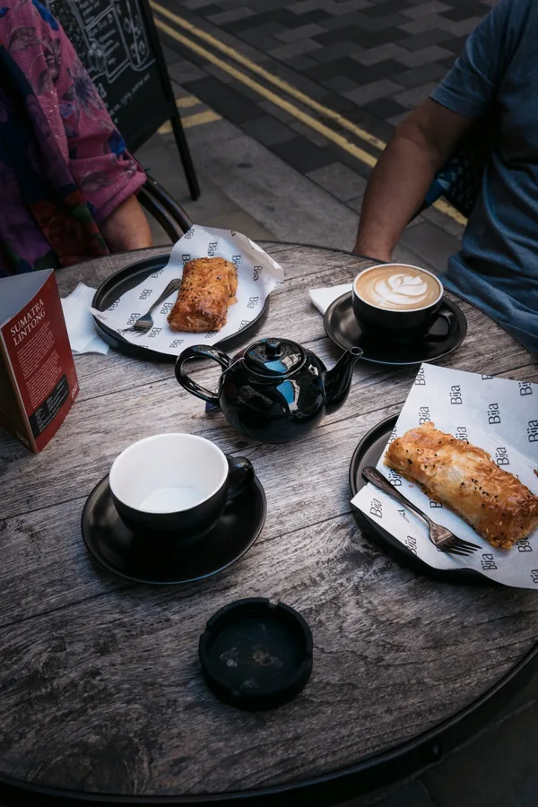
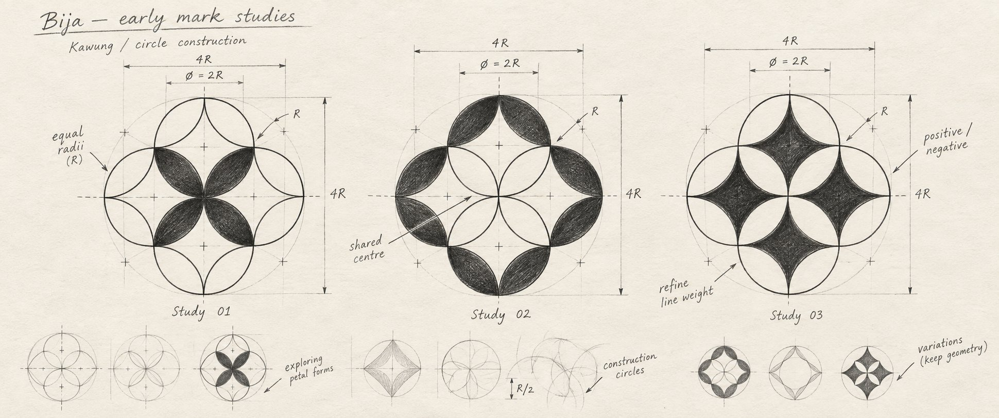
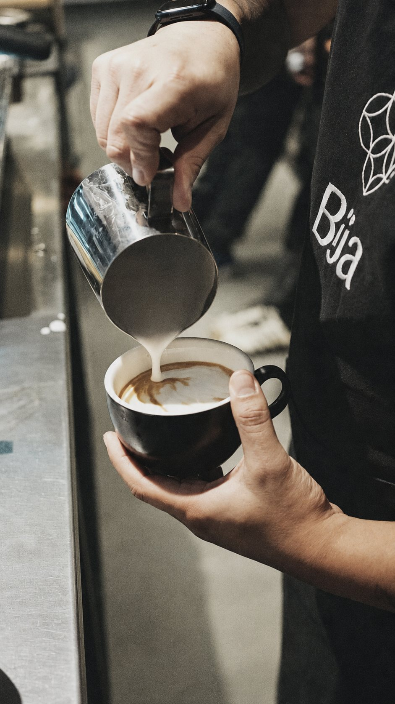

Our story
More than coffee.
Bija grew from a love of Indonesian coffee and the conversations that gather around it. At St James’s Market we have made a home for both: the flavours of the islands, and a welcome worth coming back for.
The Bija journal
Get to know Bija.

The concept
Where Indonesian coffee culture meets everyday London life.
Read the story
The brand identity
Our name, our mark and the Batik Kawung rhythm that runs through everything we make.
Read the story
The people behind Bija
The founder, the baristas and the shared belief behind every welcome.
Read the storyMore than coffee, authentic taste, real connections.
Our tagline in one breath: the care in every cup, and the people who gather around it.